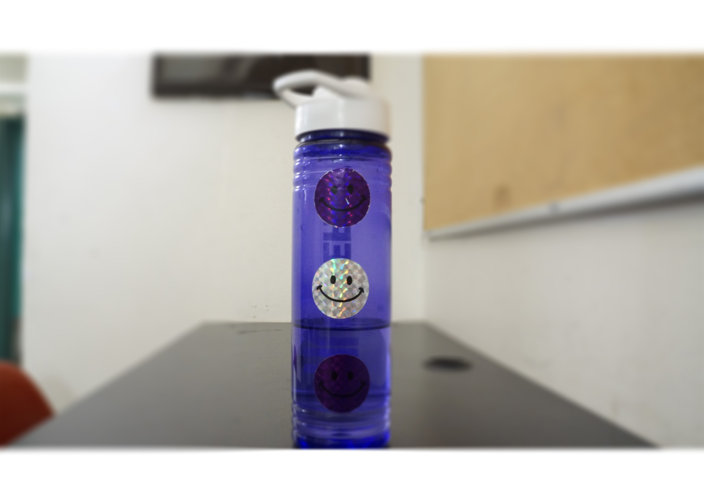

Here, I have two pictures of my water bottle: one with a shallow deoth of field, and one with a wide depth of field. These two images were created by changing the aperture settings on the camera. This image has a shallow depth of field which was created in Adobe Photoshop. Using editing, I took the previous image with the wide depth of field and used blurring to create the illusion of a shallow one.
HOME
This image has a shallow depth of field which was created in Adobe Photoshop. Using editing, I took the previous image with the wide depth of field and used blurring to create the illusion of a shallow one.
HOME